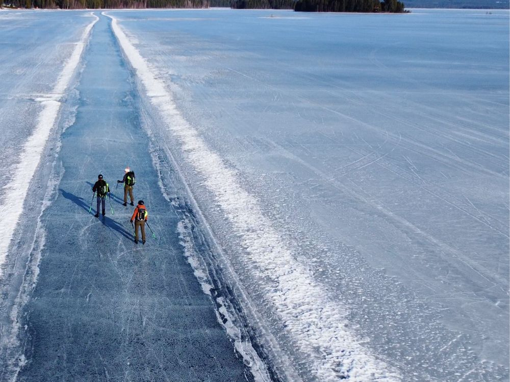
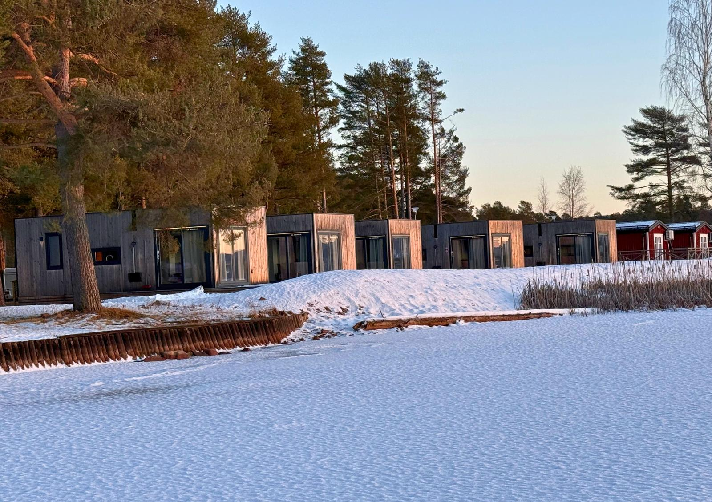
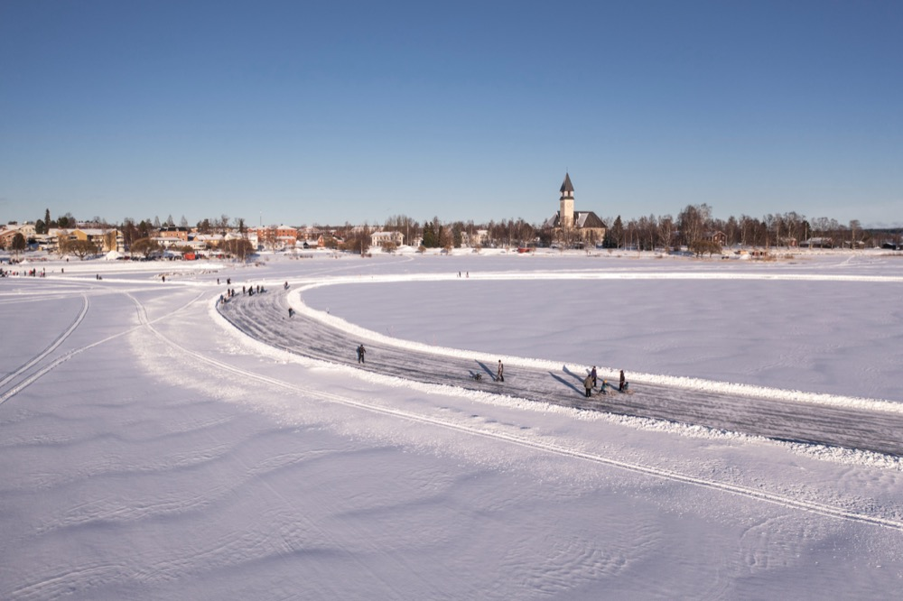

Orsa, Zweden
Orsa
Schaats op het prachtige Orsameer in Dalarna. Bij goede omstandigheden ligt hier een geveegde baan van ongeveer 15 kilometer.
Je verblijft in je eigen huisje vlak bij het meer. Vlucht, verblijf en vervoer ter plaatse zijn inbegrepen.
Je schaatst zelfstandig, maar bij deze reis kun je begeleiding op het ijs bijboeken.
- Soort reis
- Zelfstandig, begeleiding op het ijs mogelijk
- Verblijf
- Eigen huisje bij het meer
- Data
- Zelf te bepalen
- Prijs
- Vanaf €995